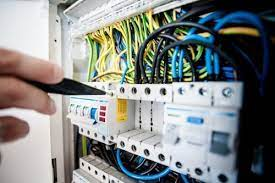
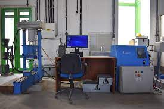
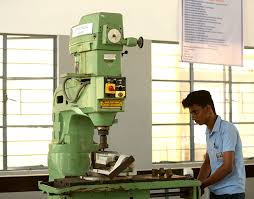

>>Diploma in Computer Science & Engineering
Diploma in Computer Engineering is a course designed for students who wish to opt for a computer science course after class 10th studies. The course provides a basic understanding of computer science, engineering concepts and mathematical techniques.It helps students acquire skills and knowledge to become an IT professional in future. The course duration is of 3 years offered in various institutes in India. Diploma in Computer Engineering is the combination and theoretical and practical concepts and finds its implementation in IT firm, communication sector, research and development, medical field etc.
>>Diploma in Electrical Engineering
Diploma in Electrical Engineering is a three-year programme where the students are taught about the application of electromagnetism, electronics, and electricity. It is a part of the Engineering field of study. Candidates who have completed their Class 10th with a minimum of 45% marks are eligible to apply for the course. Admission to this diploma engineering programme is done via entrance exams like PPT .A wide range of Diploma in Electrical Engineering subjects is taught to students pursuing this course such as telecommunications, signal processing, control systems, electronics, and power. Today the market is beaming with opportunities for electrical engineers, as electricity has become an indispensable part of human lives. There are several job opportunities available after this course like, Electrical Design Engineer, Technical Trainer, Field Application Engineer, etc. Some of the top Diploma in Electrical Engineering recruiters are Emerson, Mitsubishi Electric, and Servomax.

>>Diploma in Civil Engineering
Diploma in Civil Engineering is a 3-year-long diploma programme for candidates who have completed their Class 10 and want to pursue civil engineering as a career. It is a reputable diploma programme that offers several job opportunities to young students. It is a diploma-level engineering programme that focuses on designing, constructing, and maintaining physical and naturally-built environments such as bridges, roads, canals, and buildings and dams. in terms of future prospects, the job opportunities are available for Civil Engineer, Environment Engineer, Urban Planning Engineer, Civil Engineering Drafter, Civil Engineering technologists, Site Engineer, and related. Some of the top recruiters that provide jobs to candidates are Tata Projects, PCC, Shapoorji and Pallonji, and Rama Group.

>>Diploma in Mechanical Engineering
The diploma in mechanical engineering is a three-year diploma degree program that deals with applications of Physics, manufacturing, analyzing, designing, dealing, and applying all the basic principles of machines. The course of mechanical engineering contains a depth that allows a candidate to choose various career options after the completion of the course. The diploma in mechanical engineering is pursued by the candidates after class 10. Candidates who want to pursue a diploma in mechanical engineering will have to secure at least 50% marks in class 10. A relaxation of 5% is given to the candidates belonging to the reserved categories. After the completion of the diploma in mechanical engineering, candidates can opt for BTech in mechanical engineering in the second year according to the lateral entry procedure.
